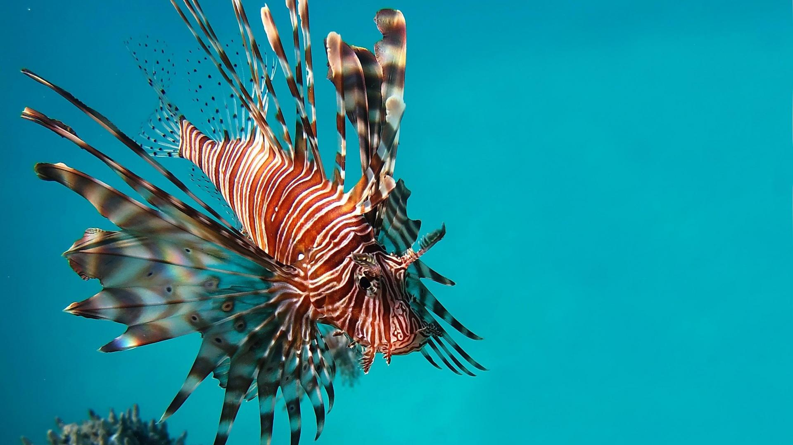
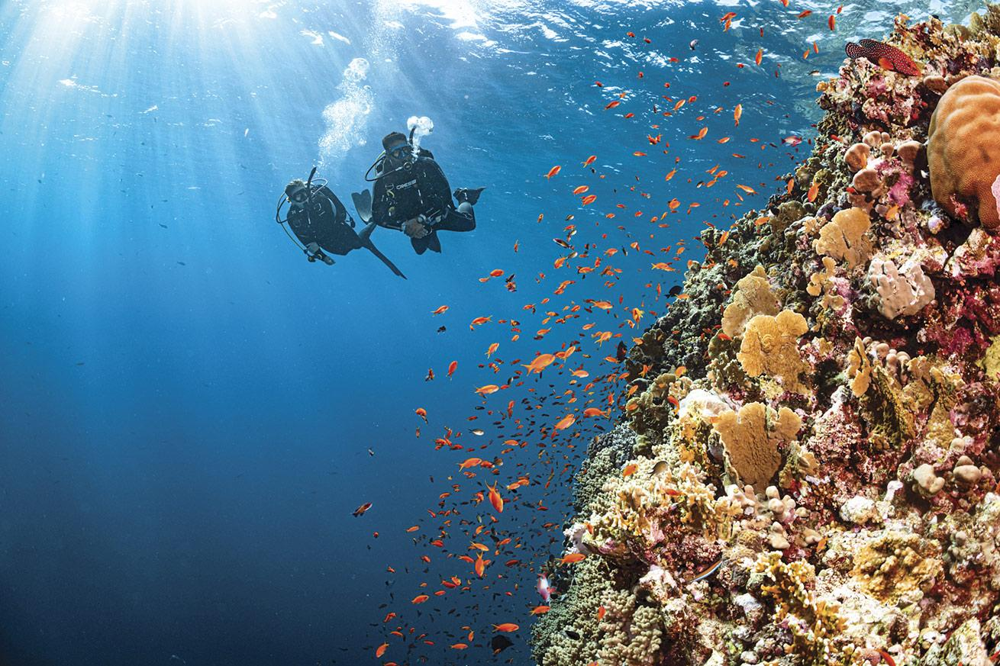
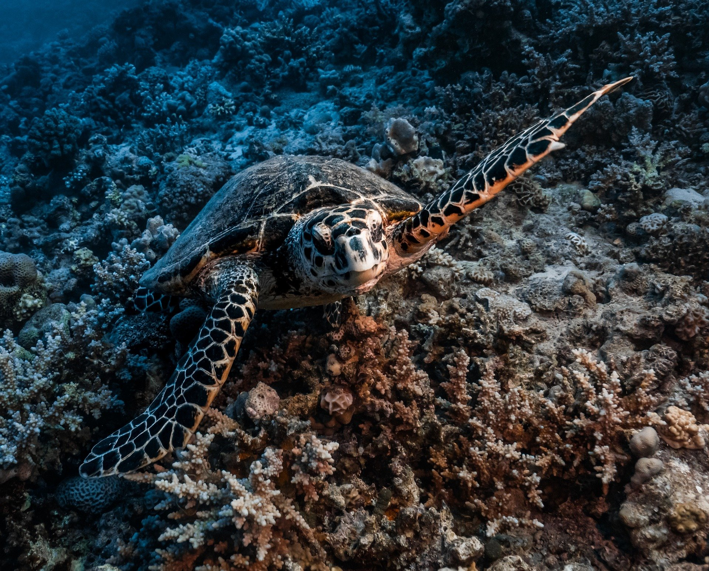
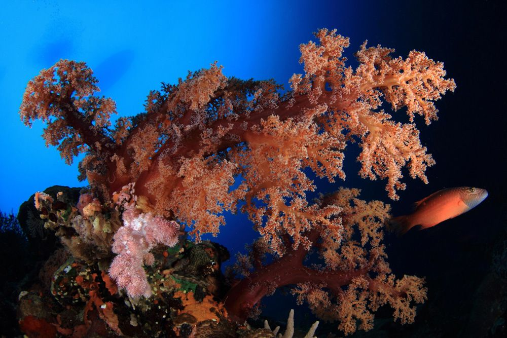

Jepun
A 15 minutos en barco desde Candidasa, en el lado más occidental de Amuk Bat, se encuentra un barco pesquero de acero hundido deliberadamente.
La ausencia de corrientes y una profundidad máxima de unos 20 metros hacen que sea una inmersión muy fácil.
El pecio yace casi vertical a 19 metros de profundidad sobre el fondo arenoso. Desde su proa hasta la zona baja se extienden granjas de coral hechas de alambres metálicos. Aquí se refugian numerosos peces y crustáceos.
Tras esta instalación, llegaremos a un arrecife poco profundo donde haremos una parada de seguridad para observar a sus habitantes
Turtle Neck
Es uno de los puntos más emblemáticos de Padam Bay, conocido por su belleza tranquila y por ofrecer algo especial a buceadores de todos los niveles. El sitio combina una pared de coral que desciende suavemente con un área rica en vida macro, creando un entorno perfecto tanto para quienes buscan observar detalles diminutos como para los amantes del paisaje submarino.
A lo largo de la inmersión, es habitual encontrarse con tortas verdes/carey descansando o nadando entre los corales , así como con una gran diversidad de pequeñas criaturas: nudibranquios de colores intensos, gambitas limpiadoras, cangrejos decoradores y otras joyas para los fotógrafos macro.
La pared está cubierta de corales duros y blandos , esponjas y abanicos de mar que y movimiento y color a todo el recorrido. La visibilidad suele ser excelente y las corrientes suaves, lo que permite una inmersión relajada y muy segura para principiantes, pero igualmente disfrutable para buceadores avanzados que quieran explorar cada rincón.


Blue Lagoon
Blue Lagoon es una pequeña bahía situada justo al norte del puerto de Padang Bai. Es uno de los sitios más populares para principiantes y para quienes buscan una inmersión tranquila y colorida.
La bahía ofrece un fondo arenoso con parches de coral y rocas donde se esconden morenas, peces escorpión y nudibranquios. A medida que avanzamos hacia el exterior, encontramos jardines de coral con abundancia de peces payaso, peces ángel y cardúmenes de fusileros.
La profundidad máxima ronda los 20 metros, lo que lo convierte en un lugar ideal para largas inmersiones relajadas, con una parada de seguridad rodeada de vida marina vibrante.
Bias Tugal
Es otra bahía al oeste del puerto. En nuestra opinión, es el mejor sitio de buceo que ofrece la bahía de Padang. Debido a las corrientes, este sitio de buceo es un poco más exigente; sin embargo, con una buena planificación, la inmersión es muy agradable.
Aquí tenemos una gran oportunidad de avistar tortugas, pulpos, jureles, fusileros, pargos y, a veces, tiburones de punta blanca y rayas.
Durante la inmersión, nos encontraremos con un enorme pináculo cubierto de corales y esponjas con bancos de peces cristal y algunas langostas que han encontrado aquí su hogar.

Tenemos más puntos de buceo y por supuesto nos adaptamos a ti!!
Contáctanos para más información
Contactar
Síguenos en nuestras redes